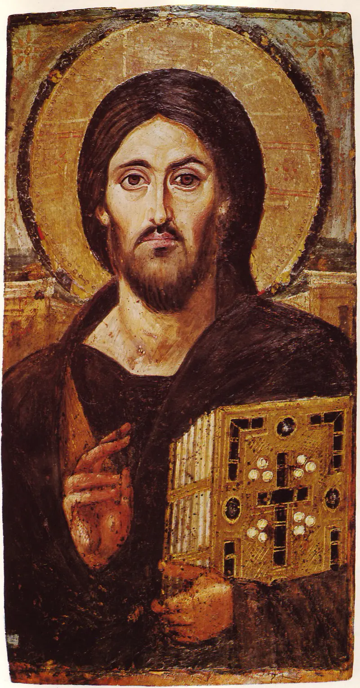
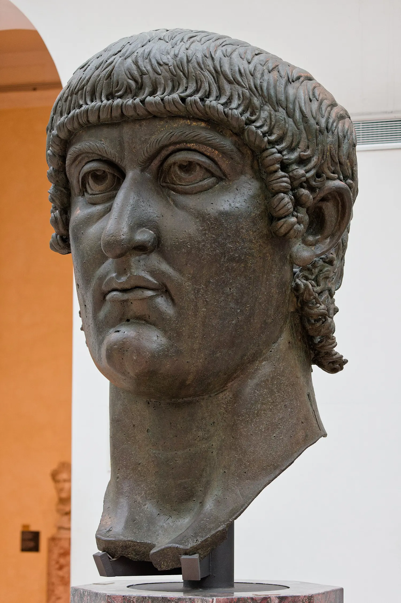
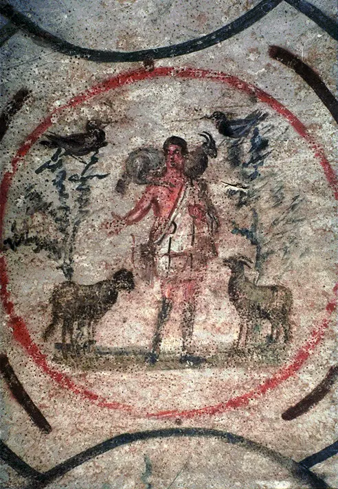
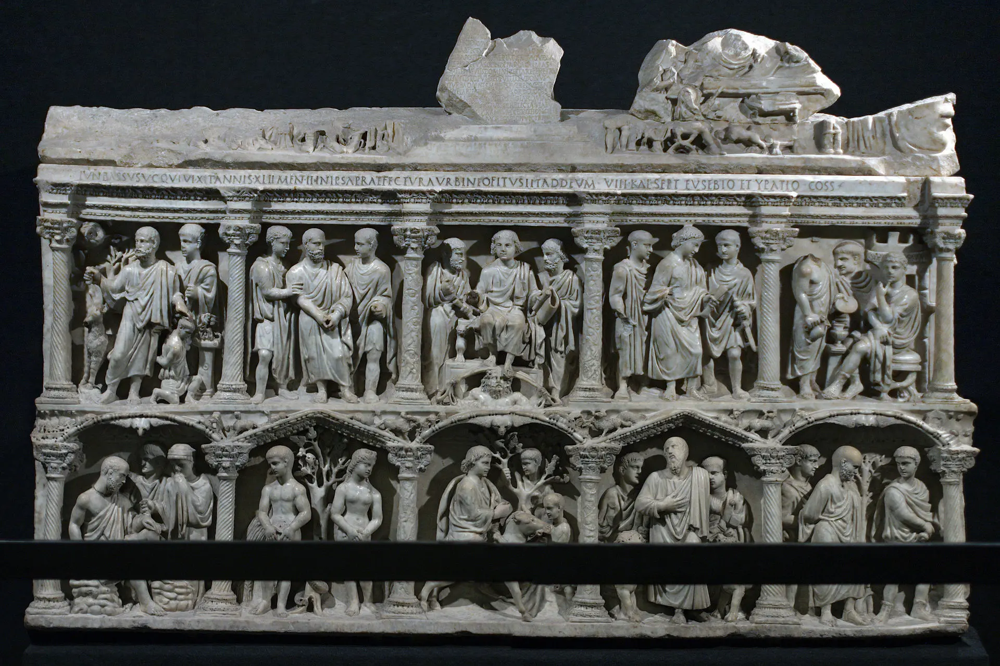
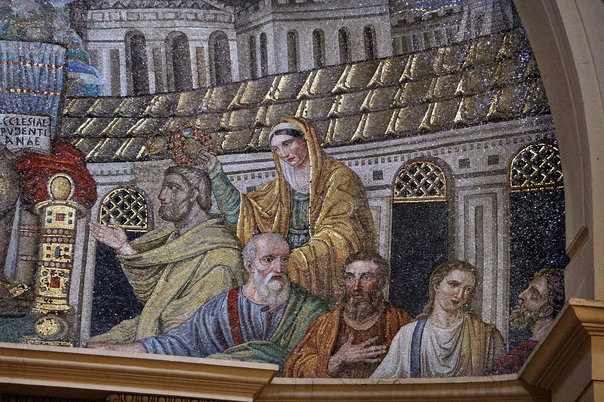
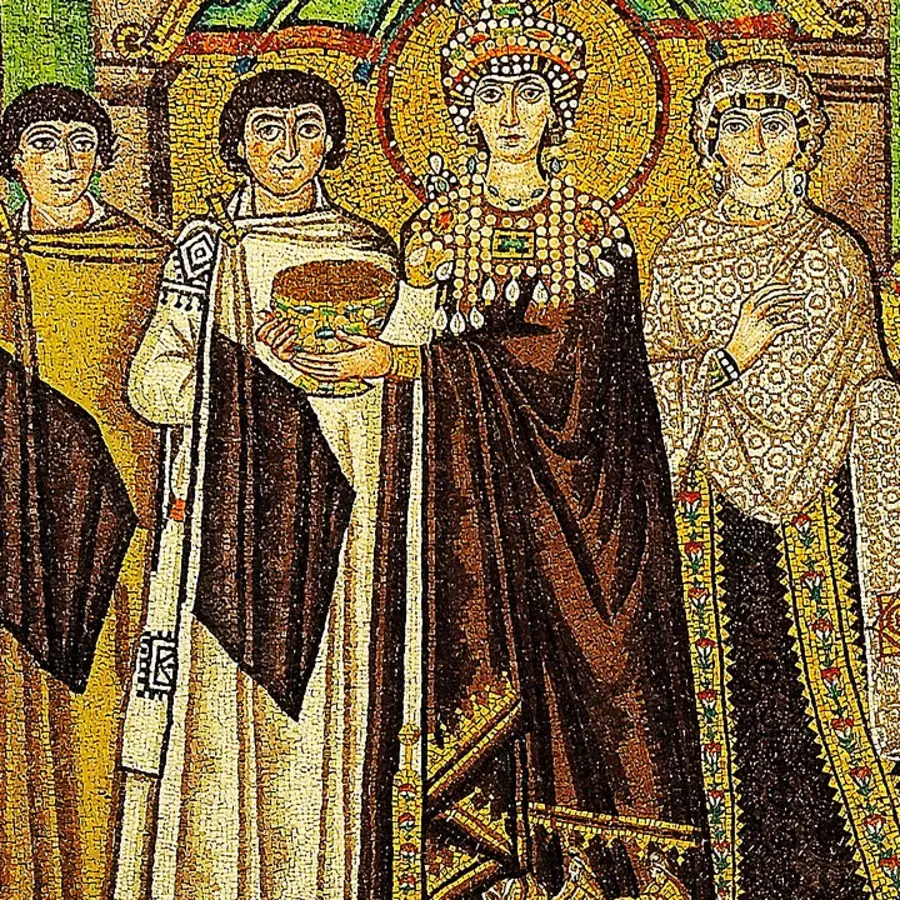
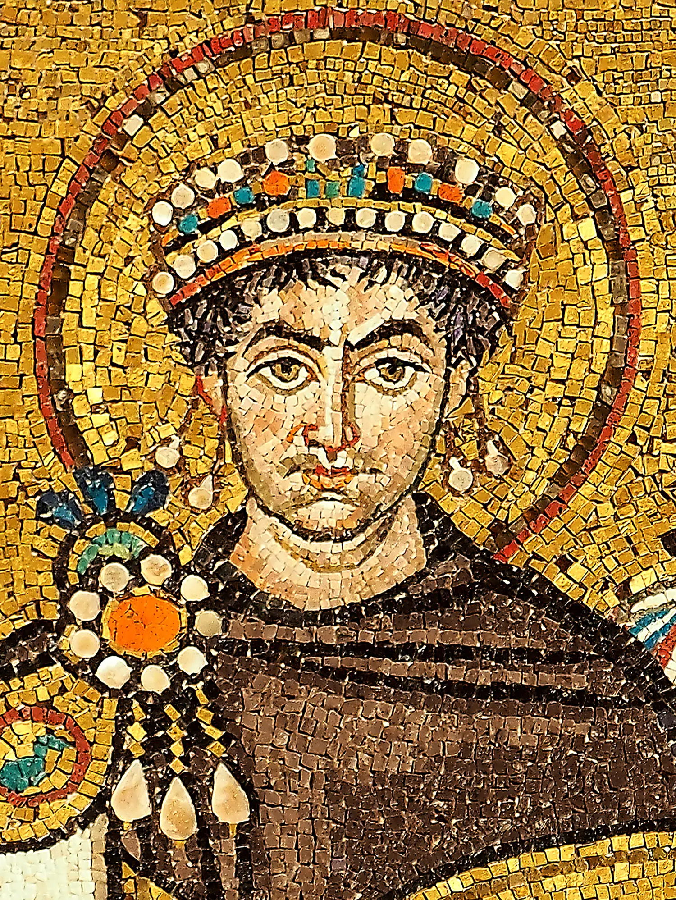
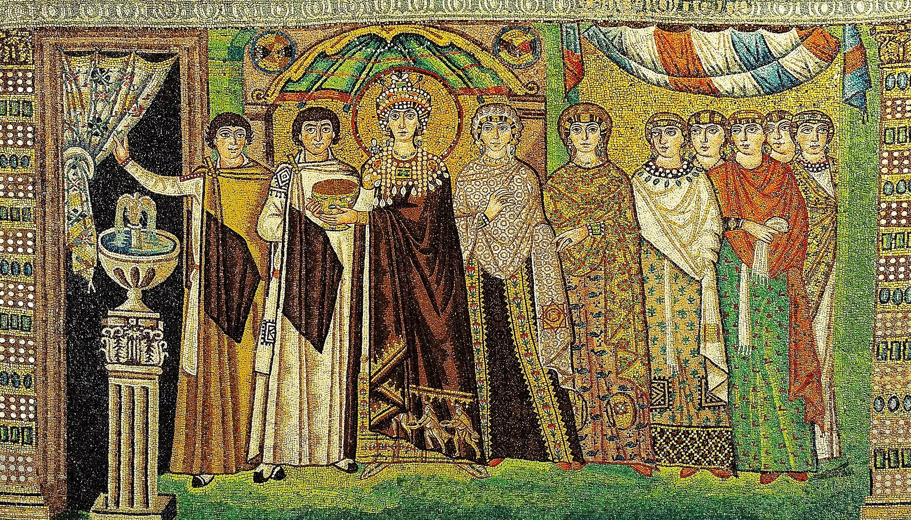
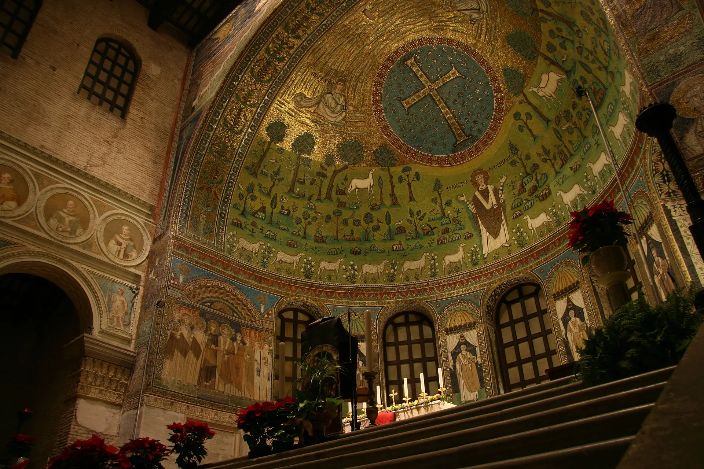

Dio invisibile
Non è un oggetto del mondo e non coincide con una forma materiale.

01 · Guarda prima di sapere
Nessun nome, nessuna data, nessuna spiegazione. Resta davanti al volto e lascia che il primo giudizio nasca dai particolari: occhi, asse, gesto, libro, luce, fondo.
Continuità e trasformazione
Dopo il volto dell’impero
Volto, posa, scala e ripetizione avevano trasformato la persona dell’imperatore in un tipo pubblico riconoscibile. Il cristianesimo non nasce in uno spazio visivo vuoto: eredita un linguaggio capace di costruire autorità e lo sottopone a una domanda nuova.

L’imperatore non viene semplicemente rimpiazzato da Cristo. Trono, porpora, nimbo, gesto, processione e monumentalità vengono selezionati e discussi dentro un problema teologico: per la fede cristiana Dio è invisibile, ma si è reso visibile in un corpo storico.
Il paradosso dell’immagine cristiana
Se Dio è invisibile
Le comunità cristiane ereditarono il rifiuto biblico dell’idolo, ma non una cultura senza immagini. Anche il rapporto dell’ebraismo con la figurazione fu storicamente più complesso di un divieto assoluto: contavano il soggetto, la funzione e il rischio che un manufatto fosse trattato come una divinità.
La risposta cristiana maturò intorno all’Incarnazione: secondo questa dottrina, il Figlio assunse un corpo umano e divenne visibile. Rappresentare Cristo poteva dunque essere difeso senza pretendere di contenere la natura divina dentro pigmento o legno.
Non è un oggetto del mondo e non coincide con una forma materiale.
È rappresentabile, nella logica cristiana, perché ha assunto un corpo storico.
Legno, cera, pigmento, pietra e vetro restano materia lavorata da artigiani.
Non coincide con il supporto: l’immagine rinvia a un prototipo.
Venerazioneonore relativo rivolto alla persona attraverso l’immagine
≠Adorazioneculto dovuto, nella dottrina cristiana, soltanto a Dio

Segni fra i morti
Comunità, memoria, sepoltura
Le catacombe erano soprattutto cimiteri sotterranei, non città segrete nelle quali tutti i cristiani vivevano per fuggire. Le persecuzioni furono reali, ma intermittenti, diverse secondo tempi e territori; le comunità pregavano anche in case, ambienti adattati e spazi condivisi.
Il giovane con la pecora sulle spalle apparteneva già al repertorio pastorale romano. Nel contesto funerario cristiano poteva evocare cura, salvezza e speranza oltre la morte. Il simbolo non è un codice segreto dal significato fisso: il contesto modifica ciò che una forma conosciuta permette di pensare.
L’immagine entra nello spazio pubblico
Una visibilità graduale
L’accordo di Milano rese legale il culto cristiano e restituì beni confiscati, ma Costantino non proclamò il cristianesimo religione ufficiale dell’impero. Patronato imperiale ed episcopale, basiliche e trasformazioni urbane ampliarono progressivamente la visibilità pubblica.

Il sarcofago di un prefetto urbano conserva qualità scultorea e status dell’élite mentre ricompone episodi dell’Antico e del Nuovo Testamento.
Tipologia non significa somiglianza decorativa. È una lettura che collega eventi differenti: il primo viene interpretato come anticipazione del secondo.
Non è un tempio pagano con una croce aggiunta. Forme civili, residenziali, funerarie e imperiali furono selezionate e trasformate: l’asse, l’abside, l’altare e il movimento dell’assemblea organizzavano uno spazio per la liturgia, cioè per azioni collettive, parole, gesti, canto e processioni.
Comunità greche, latine, siriache, copte e armene non pensavano né rappresentavano tutto nello stesso modo; convivevano con ebrei, culti tradizionali e nuove devozioni.
Roma, Costantinopoli, Ravenna e il Mediterraneo orientale formavano una rete di corti, vescovi, porti, monasteri e pellegrinaggi nella quale circolavano artigiani e modelli.
I concili e le controversie cristologiche cercarono di definire come divino e umano si unissero in Cristo; le immagini entrarono dentro questo conflitto, non dopo di esso.
Patronato imperiale e autorità episcopale finanziavano edifici e programmi visivi, ma potevano anche competere per il controllo dello spazio, della dottrina e della memoria.
Crisi delle istituzioni romane, migrazioni e nuovi regni ricomposero il linguaggio antico dentro strutture politiche differenti; non cancellarono improvvisamente capacità e saperi.
Marmo, vetro colorato, oro, pergamena e pigmenti richiedevano cave, fornaci, botteghe specializzate e committenti: la trascendenza aveva sempre un costo materiale.

Il corpo entra in un altro spazio
Santa Pudenziana, Roma
Cristo siede in trono come un’autorità, gli apostoli formano un consesso, la città occupa ancora una profondità riconoscibile. Eppure il gesto, il libro, la posizione centrale e i segni celesti non descrivono una scena quotidiana: costruiscono una storia che unisce Roma, Gerusalemme celeste e governo sacro.
Ridurre queste immagini a una “Bibbia per chi non sapeva leggere” è fuorviante: potevano narrare, ma anche organizzare la liturgia, definire dottrine, custodire memoria, manifestare autorità e orientare la devozione di persone alfabetizzate e non alfabetizzate.
Il mosaico attuale non è una finestra intatta sul V secolo. Tagli, restauri e rifacimenti hanno modificato parti dell’abside; leggere l’opera significa distinguere ciò che sopravvive dalla forma che le epoche successive le hanno dato.
Tronoautorità
Librolegge e insegnamento
Frontalitàpresenza
Cittàstoria trasformata
La materia diventa luce
Il mosaico non imita la pittura
Una tessera non è un pixel antico. Pietra, pasta vitrea e foglia d’oro hanno opacità e riflessi diversi; l’inclinazione irregolare cattura la luce reale e fa variare l’immagine mentre lo spettatore attraversa lo spazio.

Scegli una materia: la luce attraverserà il dettaglio in modo diverso.
Il fondo oro non è semplicemente assenza di paesaggio e non significa sempre “paradiso”. Interrompe la profondità naturale, avvicina e allontana la figura nello stesso tempo, lega l’immagine alla luce reale dell’edificio. La materia non viene negata: viene organizzata per apparire attraversata da qualcosa che la supera.
La corte entra nello spazio sacro
Ravenna · San Vitale · circa 547
Giustiniano e Teodora non visitarono Ravenna per posare davanti ai mosaicisti. I pannelli non fotografano una cerimonia; collocano corte, esercito, clero e doni liturgici accanto all’altare, rendendo visibile un ordine politico e religioso.


Non errore: la processione comprime i corpi in una gerarchia leggibile.
Non invenzioni esclusivamente cristiane: segni ereditati, selezionati e trasformati.
Patena e calice legano la corte a un rito compiuto nello spazio reale della chiesa.
Come nel modulo 04, l’immagine rende presente il potere dove il corpo non si trova.
Un’immagine che pretende una relazione
Ora possiamo darle un nome
L’opera iniziale è un’icona a encausto su tavola, datata prudentemente al VI secolo e conservata nel monastero di Santa Caterina al Sinai. Pantocratore significa “sovrano di tutto”. Non è un ritratto fisiognomico verificabile di Gesù: è un tipo iconografico formatosi progressivamente per costruire una presenza riconoscibile.
Stai osservando la rappresentazione di un volto o entrando nella relazione che quell’immagine vuole rendere possibile?
Attiva un livello realmente ancorato alla fotografia
Scegli un livello. Distingueremo ciò che è materialmente visibile, ciò che è fondato e ciò che resta ipotetico.
0 / 12 livelli esplorati
Tavola lignea dipinta a encausto: pigmenti legati con cera calda.
Un’icona non è un quadro moderno autonomo: appartiene a pratiche di preghiera, processione e liturgia.
Le due metà differiscono, ma leggerle con certezza come “umana” e “divina” è un’interpretazione moderna non dimostrata.
Il Sinai conservò numerose icone antiche; sopravvivenza e restauri non implicano però un aspetto immutato.
Quando l’immagine diventa un conflitto
Iconoclasmo bizantino
Fra VIII e IX secolo, con fasi e geografie differenti, autorità imperiali ed ecclesiastiche limitarono o proibirono le immagini figurative, mentre monaci, vescovi e fedeli le difesero. Teologia, politica, disciplina del culto e pratiche devozionali agirono insieme.
Bisanzio non fu immobile. Il conflitto stesso mostra una società capace di cambiare norme, sostituire programmi visivi, distruggere opere, restaurarle e formulare nuove teorie sul rapporto fra visibile e invisibile.
Il gesto rivolto alla tavola rischia di fermarsi sulla materia e trattarla come divina.
Se Cristo ha assunto un corpo visibile, negarne ogni rappresentazione può apparire come negazione di quel corpo.
L’onore non termina nel legno: passa alla persona rappresentata, senza rendere identici oggetto e persona.
Decidere quali immagini possano occupare lo spazio pubblico significa decidere chi controlla dottrina e memoria.
Attenzione storica. Il concilio di Nicea del 325 discusse soprattutto la natura di Cristo; il riferimento decisivo per le immagini è Nicea II, nel 787. Molte opere furono distrutte, coperte o sostituite: ciò che sopravvive non è un campione neutrale di tutto ciò che esisteva.

Corpi, oggetti e luoghi che rendono presente
Oltre la superficie
A Sant’Apollinare in Classe la Trasfigurazione, l’episodio evangelico nel quale l’aspetto di Cristo si trasforma davanti a tre discepoli, non viene mostrata come una scena naturalistica completa: Cristo appare nel piccolo volto al centro della croce gemmata; Mosè ed Elia emergono dalle nubi; tre pecore rinviano ai discepoli. Paesaggio, abside, rito e luce costruiscono insieme l’evento.
Nel cristianesimo medievale anche reliquie, libri, reliquiari, pellegrinaggi, processioni e canto potevano rendere presente una memoria sacra. Nelle corti ostrogote, longobarde e carolingie il linguaggio romano e cristiano fu nuovamente ricomposto in edifici, oggetti preziosi e manoscritti. Il sacro diventava una rete di corpi, oggetti, percorsi e luoghi; autorità episcopale, monachesimo, artigiani, committenti e pellegrini ne determinavano la forma materiale.
Seconda interazione
Seleziona un’opera e poi una categoria. Non cerchiamo una sola etichetta corretta: osserviamo che cosa prevale e che cosa resta attivo sullo sfondo.
Buon Pastore · Priscilla
Scegli una categoria per leggere l’opera.
Guarda di nuovo
La stessa immagine, uno sguardo diverso
Non hai ancora salvato la prima osservazione.
Supporto, encausto, tagli, linee, gesto, libro, iscrizioni, luce.
Tipo iconografico, autorità, frontalità, rapporto con spettatore e liturgia.
Le due metà come certe rappresentazioni delle due nature di Cristo.
Monastero, sopravvivenza, venerazione, distinzione dal prototipo.
Verifica e recupero
Ricostruire relazioni
Dieci domande, una alla volta. Se un collegamento si spezza, una breve spiegazione ti riporta all’opera o al concetto e apre una domanda di recupero differente.
Domanda 1 di 10
Società → Arte → Nuova immagine del mondo → Futuro
Comunità funerarie, corti imperiali, vescovi, monaci, artigiani e pellegrini trasformarono forme romane in dispositivi di memoria, rito e presenza. Il futuro medievale erediterà questa scoperta: un’immagine non occupa soltanto una superficie, ma può organizzare un edificio, una processione e infine una città.
Controlla opere, fonti e licenze ↓Fonti e trasparenza
Le schede distinguono oggetto, fotografia e interpretazione. Le immagini sono conservate localmente per l’uso offline; non sono state generate artificialmente.
Metropolitan Museum of Art · Icons and Iconoclasm in Byzantium
UNESCO · Early Christian Monuments of Ravenna
Opera di Religione della Diocesi di Ravenna · Ravenna Mosaici
Smarthistory · Catacomb of Priscilla
Smarthistory · Sarcophagus of Junius Bassus
Smarthistory · Santa Pudenziana
Pantocratore del Sinai · monastero di Santa Caterina / K. Weitzmann · riproduzione di opera bidimensionale in pubblico dominio.
Buon Pastore, Priscilla · raccolta Gill/Gillerman, adattamento da Yale · pubblico dominio.
Sarcofago di Giunio Basso · MatthiasKabel · CC BY-SA 3.0.
Santa Pudenziana · Sailko · CC BY 3.0.
Giustiniano · Petar Milošević · CC BY-SA 4.0.
Teodora · Petar Milošević · CC BY-SA 4.0. Il dettaglio delle tessere è un ritaglio della stessa fotografia.
Sant’Apollinare in Classe · Stefano Guerrini (Edisonblus) · CC BY-SA 3.0.
Colosso di Costantino · asset già documentato nel modulo 04 e riutilizzato qui per continuità didattica.
| Testimonianza | Datazione prudente | Tecnica / materiali | Contesto e conservazione | Stato |
|---|---|---|---|---|
| Buon Pastore, Priscilla | seconda metà III sec. | pittura murale | cubicolo funerario della Velatio, Roma | in situ, lacunoso e abraso |
| Sarcofago di Giunio Basso | 359 | marmo ad alto rilievo | originariamente presso l’antica San Pietro; Museo del Tesoro di San Pietro | originale, coperchio e dettagli incompleti; copie museali esistenti |
| Mosaico di Santa Pudenziana | fine IV–inizi V sec. | mosaico absidale | basilica di Santa Pudenziana, Roma | in situ, tagliato e ampiamente restaurato |
| Giustiniano e Teodora | circa 547 | mosaico, vetro, pietra, oro | pareti del presbiterio, San Vitale, Ravenna | in situ, restaurato |
| Pantocratore del Sinai | VI sec. | encausto su tavola, 84 × 45,5 cm | monastero di Santa Caterina al Sinai | originale, tavola ridotta ai margini; storia conservativa complessa |
| Trasfigurazione, Classe | metà VI sec. | mosaico absidale, vetro, pietra, oro | Sant’Apollinare in Classe, Ravenna | in situ; abside e arco presentano fasi e restauri differenti |
{kind=link}
{kind=link}
{kind=link}
{kind=link}
.jpg){kind=link}
.jpg){kind=link}
{kind=link}